Tips and Tricks
-
You can right-click on configuration buttons and quickly change settings.
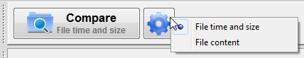
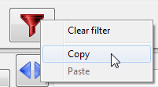
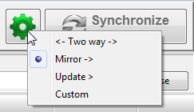
-
You can select multiple configurations at a time.
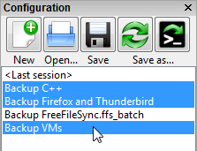
Select a few items via mouse and refine the selection by holding the Control button while clicking.
-
You can synchronize multiple folder pairs at a time.
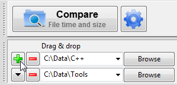
-
You can start comparison directly by double-clicking on a configuration.
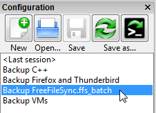
-
You can start synchronization directly without having to compare first.
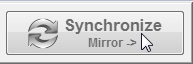
-
You can move all windows by clicking on a free area and holding the mouse button.
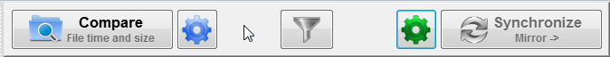
-
You can open a batch configuration without running it via the Windows Explorer context menu.
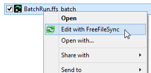
-
You can use a volume name instead of a drive letter.
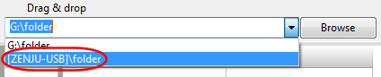
-
You can show thumbnail icons via the column header context menu.
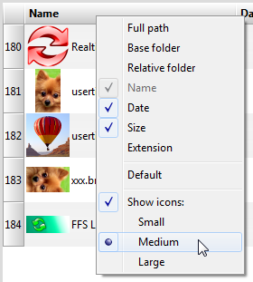
-
You can save the current view filter selection as default.
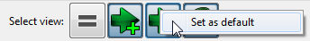
-
You can remove local settings from individual folder pairs.
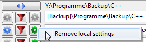
-
You can remove paths from the folder drop-down list by pressing the Delete button.
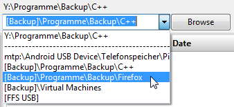
-
You can select a time span for files to include via the date column context menu.
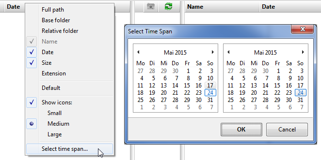
-
You can double-click on comparison and synchronization variants to confirm the dialog.
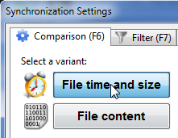
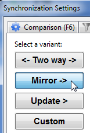